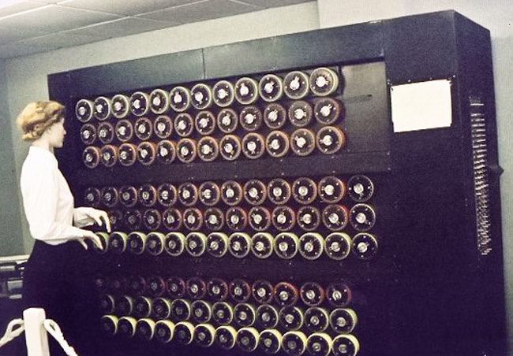

|  |
Em 1936, Alan Turing publicou um artigo que introduziu o conceito de uma máquina teórica, conhecida como "Máquina de Turing". Esta máquina era capaz de realizar qualquer cálculo que pudesse ser descrito por um algoritmo, definindo assim o conceito de funções computáveis. A Máquina de Turing se tornou a base da teoria da computação e estabeleceu o que é computacionalmente possível. Alan Turing desenvolveu uma bomba, a máquina eletromecânica usada para decifrar os códigos da máquina Enigma, utilizada pelos nazistas. Esse trabalho foi crucial para os esforços de guerra aliados. Em 1950, Alan Turing propôs o Teste de Turing como um critério para determinar se uma máquina poderia exibir comportamento inteligente indistinguível do de um ser humano. O teste envolve uma avaliação em que um interrogador humano interage com uma máquina e um humano sem saber qual é qual, e se o interrogador não puder distinguir entre os dois, a máquina é considerada inteligente. O período entre a tese de Turing em 1936 e o Teste de Turing em 1950 abrange um tempo de intensa inovação e desenvolvimento na computação, impulsionado em grande parte pela Segunda Guerra Mundial. As contribuições de Alan Turing foram centrais nesse progresso, desde a definição teórica das capacidades computacionais até a construção de máquinas práticas e a exploração da inteligência artificial. |